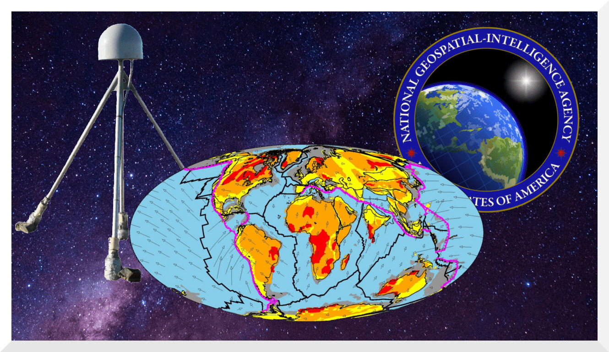

Interactive Plate Motion Model
In Summer 2019, I was employed as a Geophysics Research Intern at the National Geospatial Intelligence Agency (NGA). My team outlined a predicament: surface GPS sites, with positions determined to high accuracy upon establishment, are assumed to remain stationary; In fact, tectonic plate velocities consistently exceed 15cm/yr at some locations. As it is costly to resurvey GPS sites frequently, how else might we keep the positional accuracy of GPS sites within the Agency's standard?
My tools: a paper outlining a theoretical protocol which would identify the most accurate plate motion model for any location on Earth's continental crust, and a Python script which, when provided coordinates, identifies the most accurate plate motion model. I modulated the script into my own code such that plate motion data was collected over a global grid of over 1 million equidistant coordinate points. I then interpolated between the datapoints in ArcGIS. I delivered my team an interactive map depicting spatial variability in continental crust velocity, as predicted by plate motion models selected by the protocol.
The Agency is now using my product to estimate the frequency of resurvey necessary to keep specific GPS sites within specifications.